Under Review2027
DART: Defense-Aware Red Teaming With a Critical Cue Bank for Open-World Adversarial Evaluation
Submitted to the International Conference on Learning Representations (ICLR 2027); manuscript under review.
Publications are grouped by type and listed in reverse chronological order. Under-review manuscripts will be added separately after their status is confirmed.
Submitted to the International Conference on Learning Representations (ICLR 2027); manuscript under review.
Manuscript under review.
Manuscript under review.
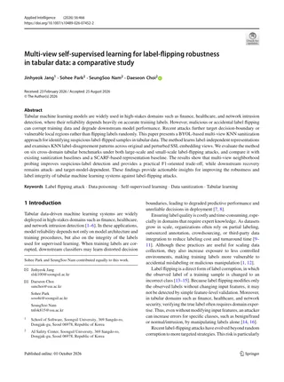
Applied Intelligence, vol. 56, no. 15, article 466, 2026.
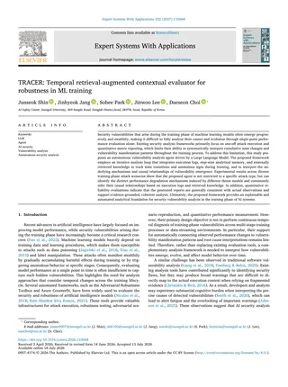
Expert Systems with Applications, article 133668, 2026.

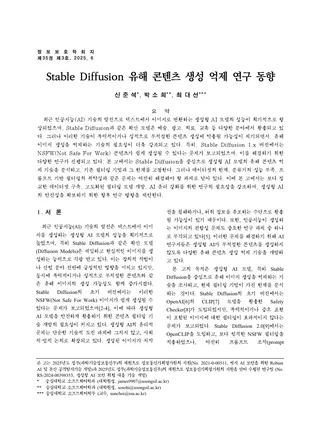
Review of KIISC, vol. 35, no. 3, pp. 79–96, 2025.
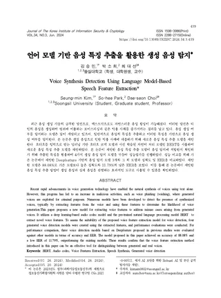
Journal of the Korea Institute of Information Security & Cryptology, vol. 34, no. 3, pp. 439–449, 2024.
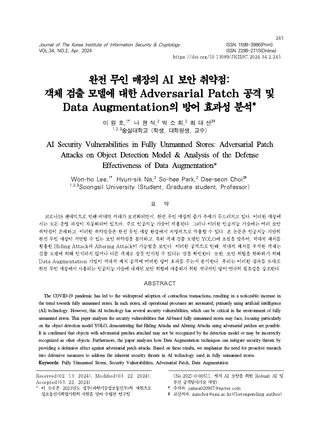
Journal of the Korea Institute of Information Security & Cryptology, vol. 34, no. 2, pp. 245–261, 2024.
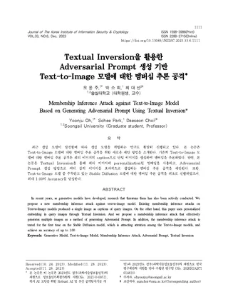
Journal of the Korea Institute of Information Security & Cryptology, vol. 33, no. 6, 2023.
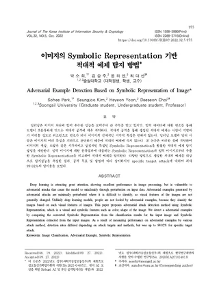
Journal of the Korea Institute of Information Security & Cryptology, vol. 32, no. 5, pp. 975–986, 2022.
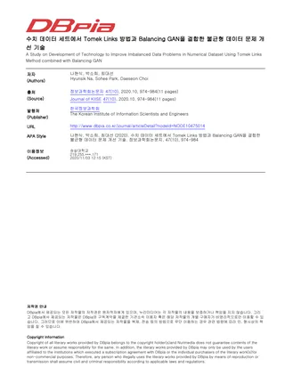
Journal of KIISE, vol. 47, no. 10, pp. 974–984, 2020.
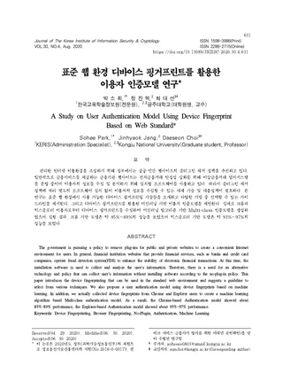
Journal of the Korea Institute of Information Security & Cryptology, vol. 30, no. 4, pp. 631–646, 2020.
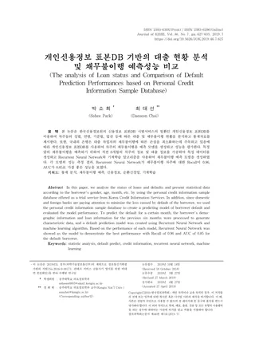
Journal of KIISE, vol. 46, no. 7, pp. 627–635, 2019.
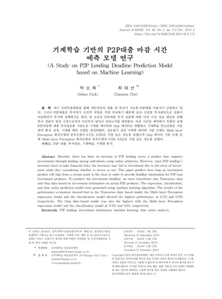
Journal of KIISE, vol. 46, no. 2, pp. 174–183, 2019.
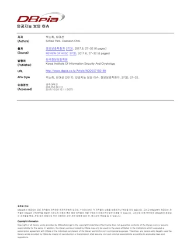
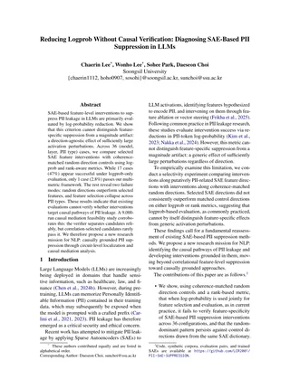
Findings of the Association for Computational Linguistics: The 5th Conference of the Asia-Pacific Chapter of the Association for Computational Linguistics and the 15th International Joint Conference on Natural Language Processing, 2026.
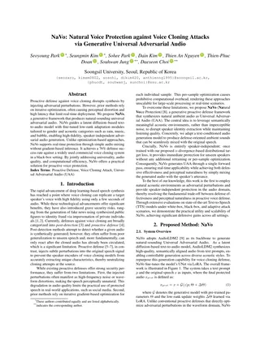
Interspeech 2026. Accepted.
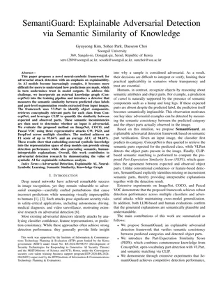
22nd International Conference on Advanced Visual and Signal-Based Systems, 2026. Accepted.
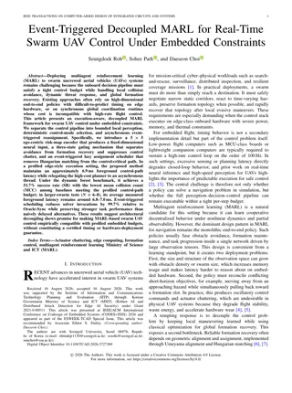
26th IEEE/ACM International Conference on Embedded Software, 2026.


IEEE International Conference on Acoustics, Speech and Signal Processing, 2026.

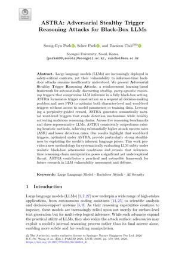
Pacific-Asia Conference on Knowledge Discovery and Data Mining, pp. 578–589, 2026.
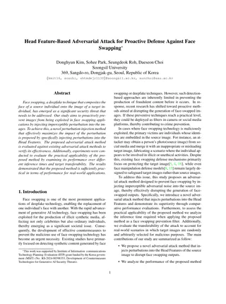
IEEE International Conference on Advanced Video and Signal-Based Surveillance, 2025.
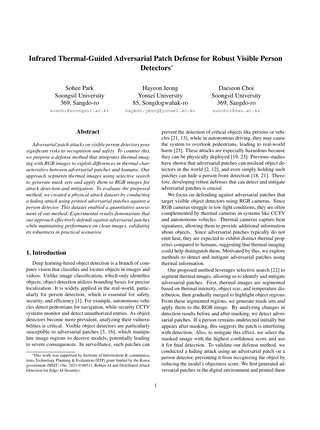
IEEE International Conference on Advanced Video and Signal-Based Surveillance, 2025.
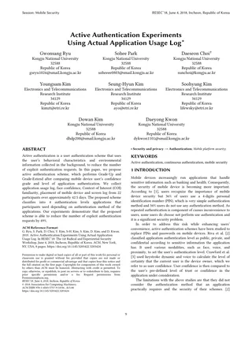
Workshop on Radical and Experiential Security, pp. 9–16, 2018.
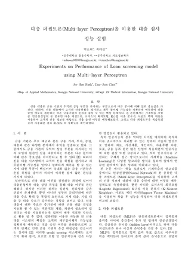
Proceedings of the Korea Computer Congress, pp. 1899–1900, 2017.
U.S. Patent Application 19/218,242, 2026.